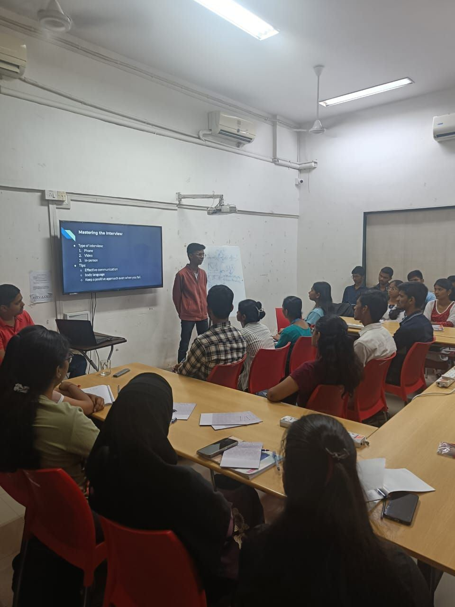
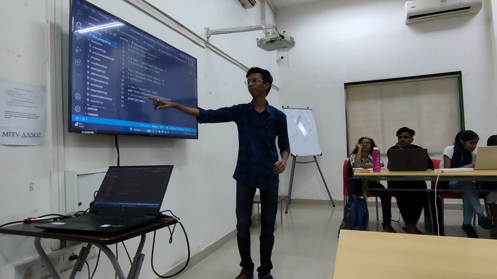
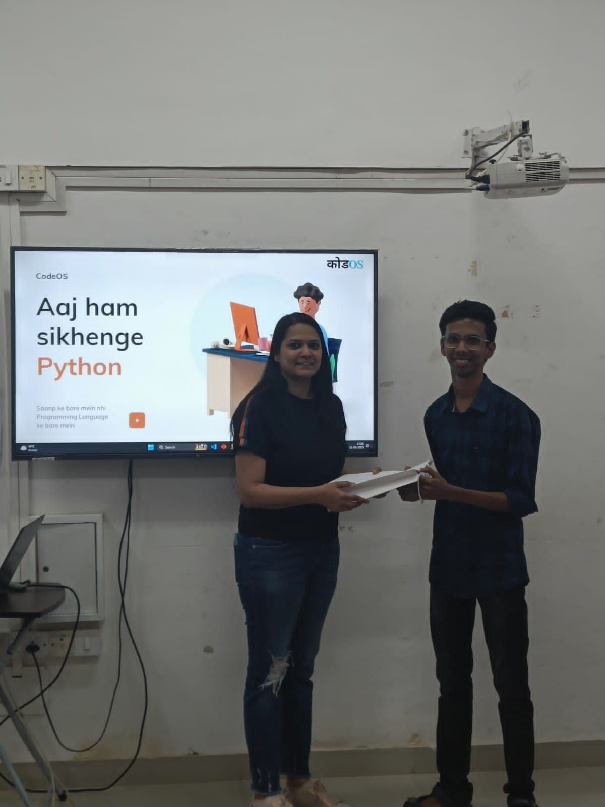
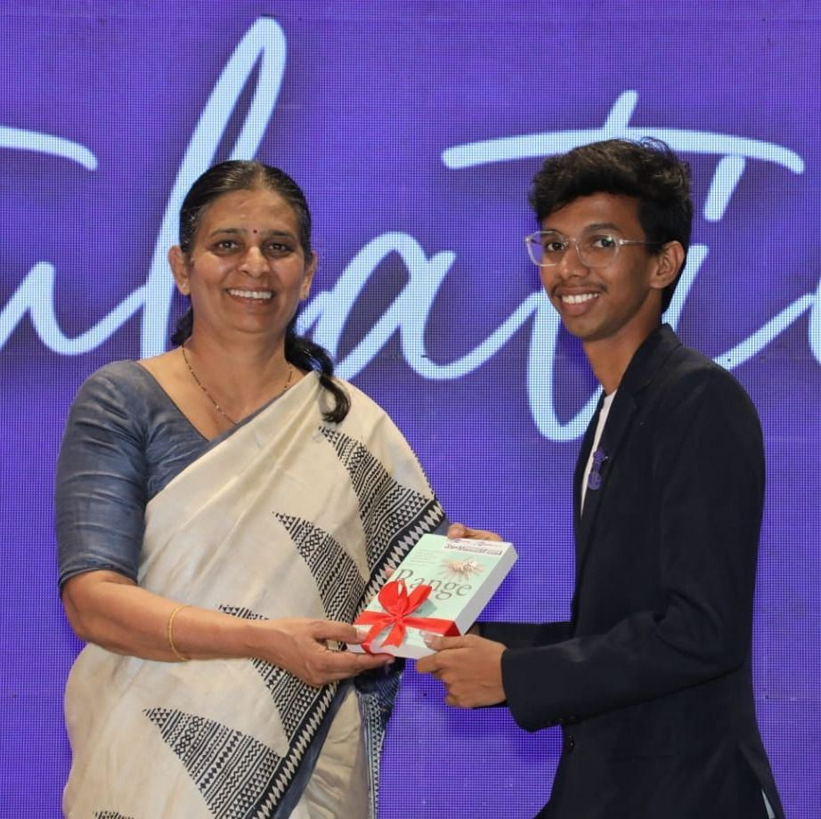
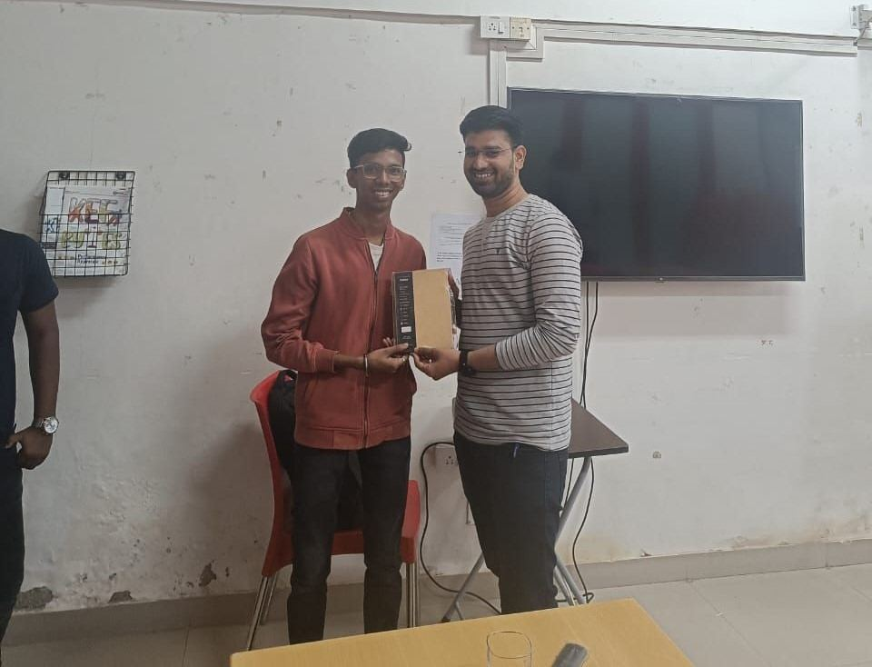
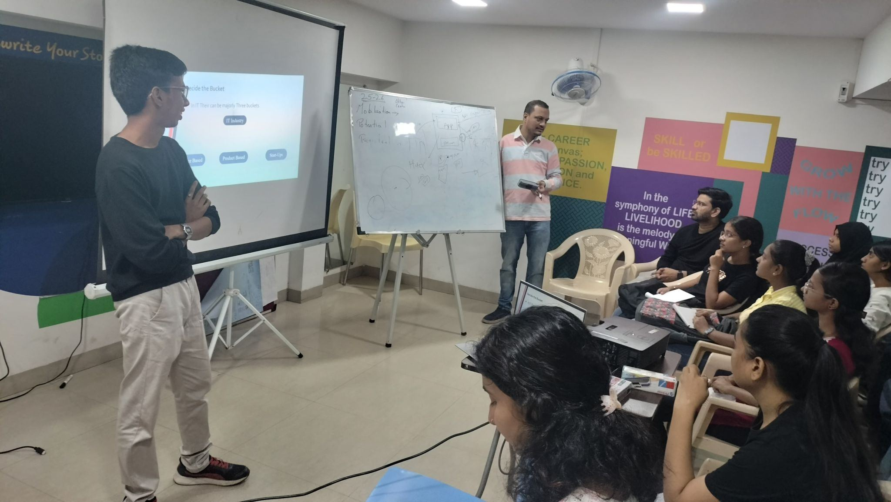
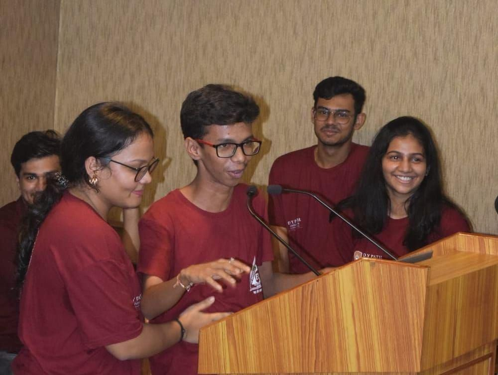
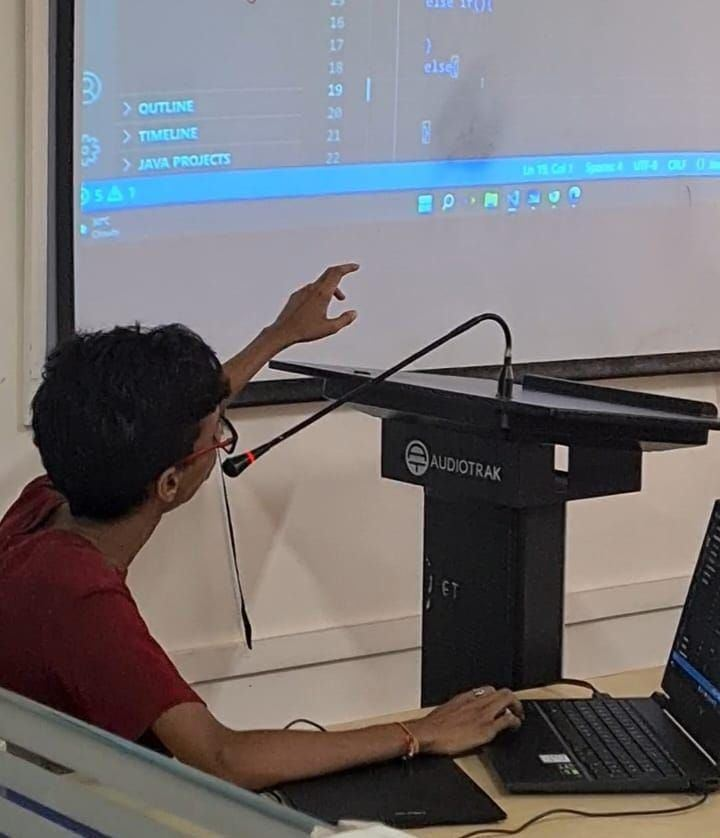
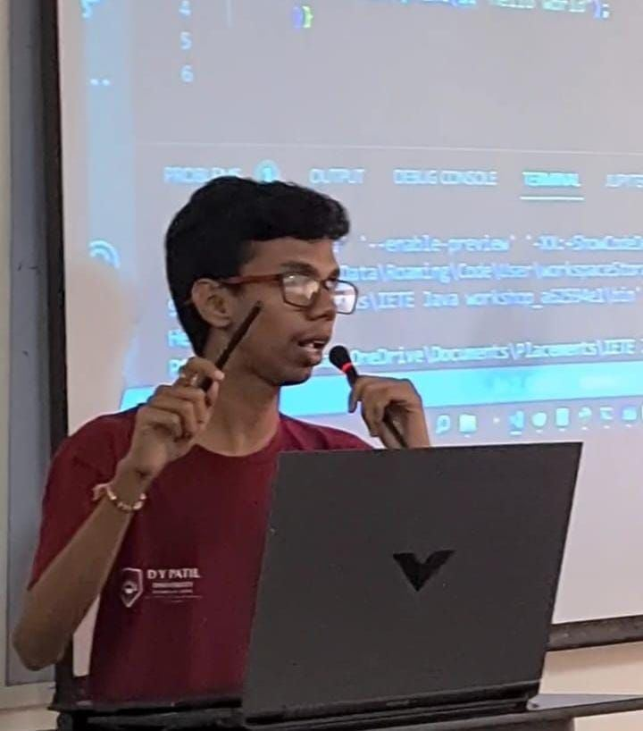

Content Creation
Videos that teach,
stories that resonate
Exploring ideas through thoughtful conversations and cultural journeys—from tech insights to Maharashtra's diverse landscapes.
About This Podcast
A conversation series with industry experts and thought leaders on design, technology, and personal growth. Each episode brings unique perspectives on building products, careers in tech, and making an impact in the industry.


About This Vlog Series
12 Jilhe 12 Bhangadi—a cultural exploration series through Maharashtra's 12 districts. Experience authentic food, traditions, spiritual places, and rich history while connecting with diverse communities and capturing untold stories from across the state.


Beyond the Desk
Teaching, building,
showing up
The best designers never stop learning — and never stop giving back. Here’s where I put that belief into practice.



CodeOS — Skill Development Bootcamps
Mentoring sessions, workshops, and educational programs for underserved students, empowering them with digital skills and career guidance.



Kotak Education Foundation
Mentoring sessions, workshops, and educational programs for students from underserved communities, empowering them with digital skills and career guidance.



IETE RAIT — Vice Chairman
Organised the Internal Smart India Hackathon, ran Python and Java workshops, and represented the college at eYantra — a national-level robotics competition.
Get In Touch
Got a problem worth
designing for?
Whether you’re building something from scratch, fixing something broken, or just want a second opinion from someone who cares deeply about craft — my inbox is open.